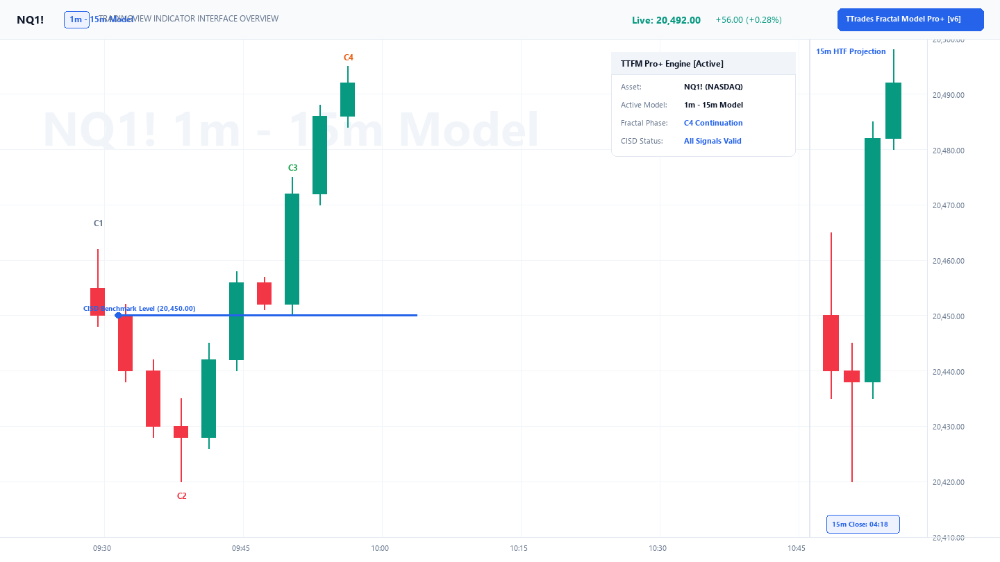

HTF Candle Projection Suite (v6)¶
Pine Script v6 Multi-Timeframe Zero Repaint
A standalone multi-timeframe candle projector displaying 15m, 1H, 4H, and Daily candles with open lines, wick ranges, and live close countdown timers on your execution chart.
1. What It Does¶
When trading on a 1-minute or 5-minute execution chart, flipping back and forth between multiple chart tabs wastes precious seconds.
The HTF Suite projects the higher timeframe candles directly onto the right-hand margin of your chart, allowing you to monitor higher-timeframe orderflow while executing lower-timeframe triggers simultaneously:

Figure H1.1: 15m HTF candle cluster projected on the right margin of the 1m execution chart with live close countdown timer.
2. Features¶
| Feature | Description | Benefit |
|---|---|---|
| Candle Projection Count | Customize how many completed HTF candles are rendered (from 3 up to 15). | Instant contextual view of the last 4-10 HTF bars |
| Live Candle Open Line | Projects a horizontal ray showing the exact opening price of the active HTF bar. | Objective benchmark for intraday premium/discount |
| Bar Close Countdown Timer | Displays minutes and seconds remaining until the HTF candle closes. | Perfectly time your entry to candle close boundaries |
| Day of Week Stamps | Labels each candle with the day of the week (Mon, Tue, Wed, Thu, Fri). | Track weekly profile development and macro shifts |
| Pro Auto Bias Integration | Colors the projected HTF candles green (bullish) or red (bearish). | Visual alignment with institutional orderflow |
3. Source Code Location¶
The open-source TradingView Pine Script v6 source code is located in: